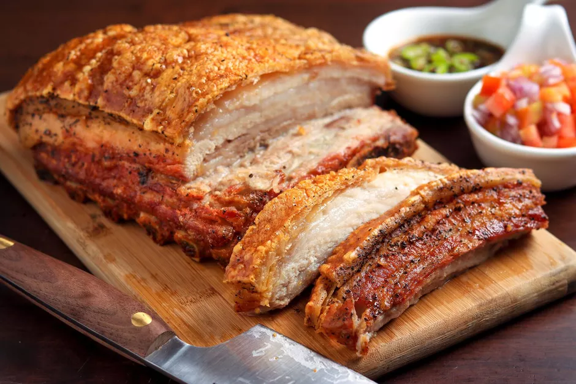
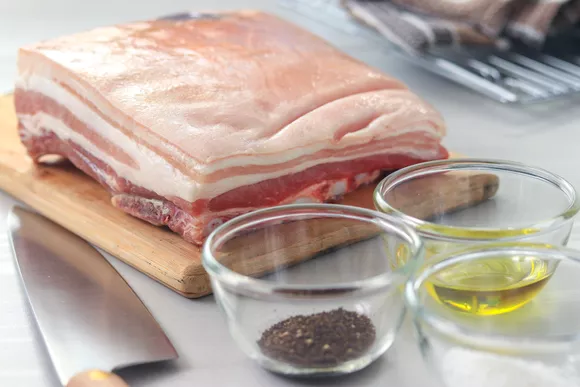
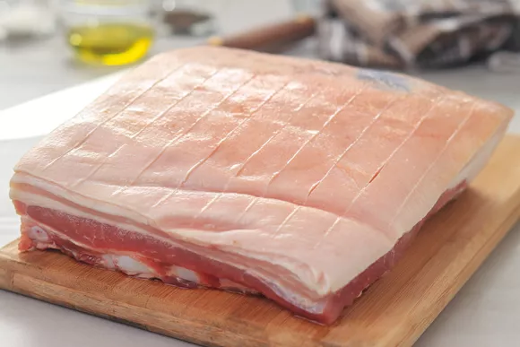
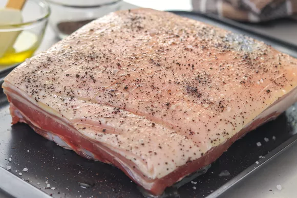
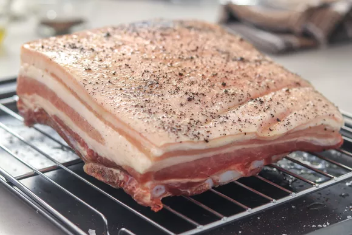
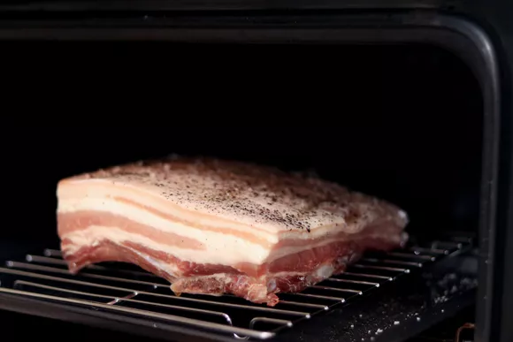
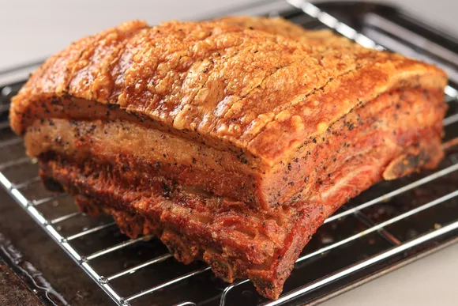

recipe for fried pork belly

Pork belly is a fatty piece of meat that is often used
to make bacon and pancetta. However, it can also be roasted,
resulting in flavorful and tender pork covered with delicious
crackling. It's that dual texture (often in a single bite)
that makes it irresistible and guaranteed to please
everyone at the dinner table.
Here are the recipe/ingredients:
- 2 pounds pork belly with skin
- 3/4 teaspoon of kosher salt
- 1/2 teaspoon freshly grounded black pepper
- 1-2 tablespoon of extra-virgin olive oil
Here are the steps in making the best slow roasted pork belly
you will ever taste!
- Gather the ingredients

- Heat the oven to 350 F/180 C. Place the rack on a
rimmed baking sheet. With a sharp knife, make several
parallel cuts across the skin of the pork belly,
1/4 to 1/2-inch apart. Cut through the skin and
fat but not into the meat.

- Sprinkle the pork all over with kosher salt and freshly
ground black pepper.
Drizzle with olive oil and rub it all into the pork.

- Place the pork on the rack, skin-side up

- Roast for 2 to 2 1/2 hours or until the meat is very tender and
falling apart. Increase the heat to 425 F and
roast for 20 to 25 minutes longer to crisp the skin even more.

- Remove the pork from the oven and let it rest for 10 mins before
slicing.

Enjoy your treat!
Back to Homepage
Original Authors: thespruceeats.com